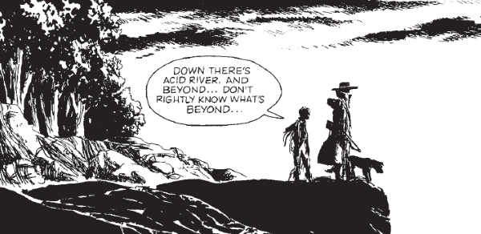

Yassa Povey, a young boy living in a quiet Cursed Earth settlement, discovers a terribly wounded man close to death: who he calls the Dead Man. His skin burnt, his memory gone - he is nursed back to health but unknowingly brings with him a dreadful curse that puts the entire settlement in danger.
Art by John Ridgway
| Story Title | Parts | Pages | w indicates a wraparound coverCovers | Year(s) | Issues | Writer | Artist | Colourist | Letterer |
|---|---|---|---|---|---|---|---|---|---|
Linked to: Judge Dredd [The Sisters of Death] [Yassa Povey] The Dead Man | 13 | 80 | 652: John Ridgway 656: John Ridgway 661: John Ridgway 3 | 1989-1990 | 650-662 | John Wagner | John Ridgway | [b&w] | Jack Potter |
From Judge DreddTale of the Dead Man | 7 | 54 | 662: Steve Cook 668: Jeff Anderson 2 | 1990 | 662-668 | John Wagner | Will Simpson: 1‑4 Jeff Anderson: 5‑7 various | <-- | Tom Frame |
From Judge DreddA Matter of Life & Dredd | 1 | 10 | 0 | 2023 | 2362 | Kenneth Niemand | Tom Foster | Gary Caldwell | Annie Parkhouse |
| year | episodes | pages |
| 1979 | 0 | 0 |
| 1980 | 0 | 0 |
| 1981 | 0 | 0 |
| 1982 | 0 | 0 |
| 1983 | 0 | 0 |
| 1984 | 0 | 0 |
| 1985 | 0 | 0 |
| 1986 | 0 | 0 |
| 1987 | 0 | 0 |
| 1988 | 0 | 0 |
| 1989 | 10 | 59 |
| 1990 | 3 | 21 |
| 1991 | 0 | 0 |
| 1992 | 0 | 0 |
| 1993 | 0 | 0 |
| 1994 | 0 | 0 |
| 1995 | 0 | 0 |
| 1996 | 0 | 0 |
| 1997 | 0 | 0 |
| 1998 | 0 | 0 |
| 1999 | 0 | 0 |
| 2000 | 0 | 0 |